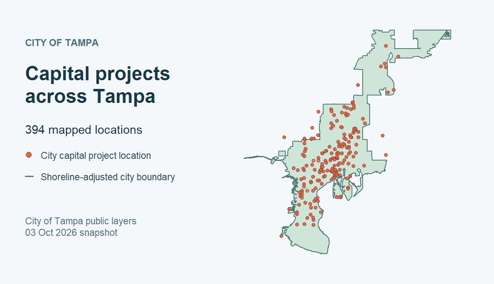

Public ArcGIS data around Tampa Bay, from R.
52 checked layers across six publishers · live portal discovery
tampaBayOpenData searches public ArcGIS data from Tampa, St. Petersburg, Clearwater, Hillsborough County, Pinellas County, and the Tampa Bay Regional Planning Council. Its bundled catalog has checked dataset IDs you can search offline. Live discovery searches publisher portals, and retrieval reads their current services. You can also supply another public ArcGIS portal or layer URL.
Install
Install from GitHub:
install.packages("pak") # if needed
pak::pak("Jaclenga/tampaBayOpenData")Install sf as well if you need spatial results.
Find and retrieve a checked layer
library(tampaBayOpenData)
parks <- tbod_search_datasets("parks", source = "checked")
parks[, c("id", "title", "publisher")]
data <- tbod_get_dataset("stpete-parks", limit = 100)
tbod_provenance(data)[c("publisher", "source_url", "retrieved_at", "complete")]The search reads the bundled catalog; retrieval contacts the publisher. limit = 100 returns a subset, recorded as incomplete in its provenance when more records match. Omit limit to request all matching records, subject to the service and package limits described in the retrieval guide.
A checked layer has a catalog entry and a saved field, geometry, and CRS snapshot. Before retrieval, its live metadata is compared with that snapshot: compatible changes warn; incompatible changes stop the request. Checked status does not verify individual records or guarantee the service will remain available. See schema checks and retrieval.
Search beyond the catalog
Live discovery searches the six configured ArcGIS publishers. For example, tbod_search_datasets("housing", source = "live", portals = "city") searches Tampa’s portal. To search another public ArcGIS portal, supply its sharing REST root:
# Replace this address with the public sharing REST root of your portal.
other <- tbod_discover("https://example.maps.arcgis.com/sharing/rest",
query = "parks")
if (nrow(other)) tbod_get_dataset(other[1, ], limit = 100)Portal results have discovered status; rows from a service or layer URL have not_checked status. Both work with tbod_get_dataset() and have no saved checked schema. Live searches can miss items when the scan is bounded or a publisher service fails; inspect attr(other, "discovery_complete") before treating a result as a complete listing. A direct public FeatureServer/<id> or MapServer/<id> URL also works with tbod_get_dataset(). The discovery and retrieval articles cover filters, scan limits, direct URLs, and downloads.
See spatial data
The checked City of Tampa city-boundary and capital-projects layers can be retrieved as sf objects with spatial = TRUE.

City of Tampa data retrieved October 3, 2026 (both ArcGIS items marked CC0). The shoreline-adjusted boundary is not a legal survey; the points do not establish current project status or complete coverage. Reproduce the map or follow the spatial walkthrough.
Coverage and source limits
The 52 checked layers are selected references, not a complete inventory or uniform coverage of each topic. Publisher services can change, and some layers are active views or approximate boundaries. The TBRPC storm surge layer is a historical planning model, not current emergency guidance. See the coverage guide for publisher counts, layer caveats, and reuse terms, and the catalog policy for selection and maintenance decisions. The package’s MIT license covers its code, not the source data. The package is independent of the publishers and rOpenSci.
Citation
Cite the package and the original data publisher and dataset. For the package citation, run:
tbod_dataset_info(id) gives catalog source details; tbod_provenance(result) records the retrieval source and time.
Learn more
- Get started and function reference
- Discovery, retrieval and downloads, and coverage and provenance
- Developer document index, architecture, API migration, validation, and contributing
- Packaged bicycle network example (R Markdown) (offline by default; optional small live subset), and the full-data bicycle network exploration (live analysis)
- Short R data exploration stories across six publishers